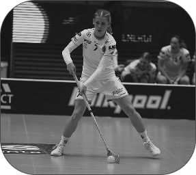

about
me.

nice to meet you!
I'm Hilda, a 25-year-old newly graduated UX/UI designer from Lund, Sweden. I enjoy combining design and technology to create digital experiences that feel clear, intuitive and enjoyable to use.
I'm curious by nature and enjoy understanding how things work, why people behave the way they do and how design can make everyday experiences a little better.
download CV01 / education
BSc in Media Technology
My degree focused on the intersection of design, technology and digital experiences. Throughout my studies, I worked with UX/UI design, interaction design, visual design and web development.
I learned to approach design as a process rather than just a visual result. From understanding a problem and researching users, to sketching ideas, creating prototypes, testing them and refining the final solution.
My thesis focused on designing iOS lock screen widgets for vocabulary learning, where I explored how visual hierarchy, glanceability and different types of information can affect the user's experience.
02 / beyond design
design is one part. competition is another.
Outside of design, I play floorball at an elite level for IBK Lund. I've been playing since I was a child, and today I compete at the highest level of Swedish floorball.
Being part of an elite team has shaped a big part of who I am. It has taught me how to take responsibility, communicate, work towards a common goal and stay focused when things don't go as planned.
I'm competitive and driven, but I also really value the people around me. For me, the best results usually come from a team where everyone contributes, trusts each other and wants to improve together.
discipline · teamwork · responsibility · resilience
03 / what I bring
Curious
I like asking questions, exploring different ideas and understanding the reasoning behind a problem before jumping to a solution.
Driven
I'm motivated by learning and improving. Whether it's design or something completely new, I enjoy challenging myself and getting better along the way.
Team player
I enjoy working with others and believe that good ideas often become better when they are shared, questioned and developed together.
Responsible
I'm someone who takes my commitments seriously and likes knowing that people can rely on me.
Problem solver
I enjoy taking something complex and finding ways to make it clearer, simpler and easier to understand.
I'm looking for a place where I can keep learning, contribute ideas and create digital experiences that people genuinely enjoy using.